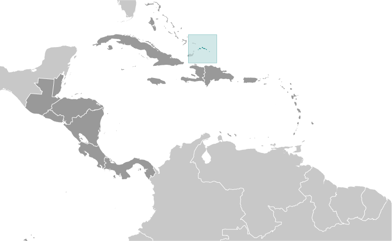
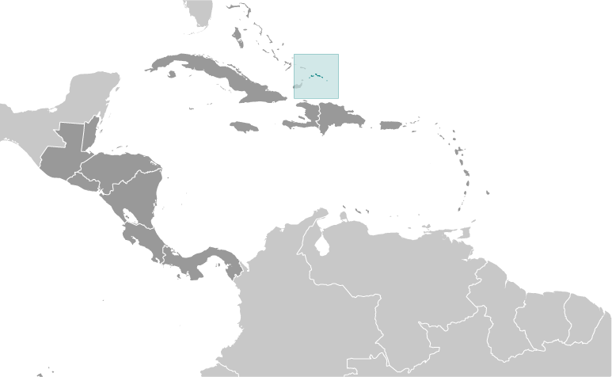

Central America and Caribbean :: TURKS AND CAICOS ISLANDS
Introduction :: TURKS AND CAICOS ISLANDS
-
The islands were part of the UK's Jamaican colony until 1962, when they assumed the status of a separate crown colony upon Jamaica's independence. The governor of The Bahamas oversaw affairs from 1965 to 1973. With Bahamian independence, the islands received a separate governor in 1973. Although independence was agreed upon for 1982, the policy was reversed and the islands remain a British overseas territory. Grand Turk island suffered extensive damage from Hurricane Maria on 22 September 2017 resulting in loss of power and communications as well as damage to housing and businesses.
Geography :: TURKS AND CAICOS ISLANDS
-
two island groups in the North Atlantic Ocean, southeast of The Bahamas, north of Haiti21 45 N, 71 35 WCentral America and the Caribbeantotal: 948 sq kmland: 948 sq kmwater: 0 sq kmcountry comparison to the world: 1862.5 times the size of Washington, DC0 km389 kmterritorial sea: 12 nmexclusive fishing zone: 200 nmtropical; marine; moderated by trade winds; sunny and relatively drylow, flat limestone; extensive marshes and mangrove swampsmean elevation: NAelevation extremes: lowest point: Caribbean Sea 0 mhighest point: Blue Hill on Providenciales and Flamingo Hill on East Caicos 48 mspiny lobster, conchagricultural land: 1.1%arable land 1.1%; permanent crops 0%; permanent pasture 0%forest: 36.2%other: 62.7% (2011 est.)0 sq km (2012)eight of the thirty islands are inhabited; the island of Providenciales is the most populated, but the most densely populated is Grand Turkfrequent hurricaneslimited natural freshwater resources, private cisterns collect rainwaterinclude eight large islands and numerous smaller cays, islets, and reefs; only two of the Caicos Islands and six of the Turks group are inhabited
People and Society :: TURKS AND CAICOS ISLANDS
-
52,570 (July 2017 est.)country comparison to the world: 208noun: noneadjective: noneblack 87.6%, white 7.9%, mixed 2.5%, East Indian 1.3%, other 0.7% (2006)English (official)Protestant 72.8% (Baptist 35.8%, Church of God 11.7%, Anglican 10%, Methodist 9.3%, Seventh-Day Adventist 6%), Roman Catholic 11.4%, Jehovah's Witnesses 1.8%, other 14%0-14 years: 21.74% (male 5,826/female 5,604)15-24 years: 13.99% (male 3,641/female 3,711)25-54 years: 53.17% (male 14,097/female 13,855)55-64 years: 6.54% (male 1,839/female 1,597)65 years and over: 4.57% (male 1,096/female 1,304) (2017 est.)total: 33.3 yearsmale: 33.6 yearsfemale: 33 years (2017 est.)country comparison to the world: 922.16% (2017 est.)country comparison to the world: 4015.3 births/1,000 population (2017 est.)country comparison to the world: 1243.2 deaths/1,000 population (2017 est.)country comparison to the world: 2219.5 migrant(s)/1,000 population (2017 est.)country comparison to the world: 11eight of the thirty islands are inhabited; the island of Providenciales is the most populated, but the most densely populated is Grand Turkurban population: 92.8% of total population (2017)rate of urbanization: 1.71% annual rate of change (2015-20 est.)GRAND TURK (capital) 5,000 (2014)at birth: 1.05 male(s)/female0-14 years: 1.04 male(s)/female15-24 years: 0.97 male(s)/female25-54 years: 1.02 male(s)/female55-64 years: 1.18 male(s)/female65 years and over: 0.8 male(s)/femaletotal population: 1.02 male(s)/female (2016 est.)total: 10.1 deaths/1,000 live birthsmale: 12.5 deaths/1,000 live birthsfemale: 7.5 deaths/1,000 live births (2017 est.)country comparison to the world: 135total population: 80 yearsmale: 77.2 yearsfemale: 82.9 years (2017 est.)country comparison to the world: 421.7 children born/woman (2017 est.)country comparison to the world: 173improved:urban: 81.4% of populationrural: 81.4% of populationtotal: 81.4% of populationunimproved:urban: 18.6% of populationrural: 18.6% of populationtotal: 18.6% of population (2007 est.)NANANAnote: active local transmission of Zika virus by Aedes species mosquitoes has been identified in this country (as of August 2016); it poses an important risk (a large number of cases possible) among US citizens if bitten by an infective mosquito; other less common ways to get Zika are through sex, via blood transfusion, or during pregnancy, in which the pregnant woman passes Zika virus to her fetus (2016)3.3% of GDP (2015)destination and transit point for illegal Haitian immigrants bound for the Turks and Caicos Islands, The Bahamas, and the US
Government :: TURKS AND CAICOS ISLANDS
-
conventional long form: noneconventional short form: Turks and Caicos Islandsabbreviation: TCIetymology: the Turks Islands are named after the Turk's cap cactus (native to the islands and appearing on the flag and coat of arms), while the Caicos Islands derive from the native term "caya hico" meaning "string of islands"overseas territory of the UKparliamentary democracy (House of Assembly); self-governing overseas territory of the UKname: Grand Turk (Cockburn Town)geographic coordinates: 21 28 N, 71 08 Wtime difference: UTC-5 (same time as Washington, DC, during Standard Time)none (overseas territory of the UK)none (overseas territory of the UK)Birthday of Queen ELIZABETH II, usually celebrated the Monday after the second Saturday in Juneseveral previous; latest signed 7 August 2012, effective 15 October 2012 (Turks and Caicos Constitution Order 2011) (2016)mixed legal system of English common law and civil lawsee United Kingdom18 years of age; universalchief of state: Queen ELIZABETH II (since 6 February 1952); represented by Governor John FREEMAN (since 17 October 2016)head of government: Premier Sharlene CARTWRIGHT-ROBINSON (since 20 December 2016); first female Premier of Turks and Caicoscabinet: Cabinet appointed by the governor from among members of the House of Assemblyelections/appointments: the monarch is hereditary; governor appointed by the monarch; following legislative elections, the leader of the majority party is appointed premier by the governordescription: unicameral House of Assembly (19 seats; 15 members in multi-seat constituencies and a single all-islands constituency directly elected by simple majority vote, 1 member nominated by the premier and appointed by the governor, 1 nominated by the opposition party leader and appointed by the governor, and 2 from the Turks and Caicos Islands Civic Society directly appointed by the governor; members serve 4-year terms)elections: last held on 15 December 2016 (next to be held in 2020)election results: percent of vote - NA; seats by party - PDM 10, PNP 5highest resident court(s): Supreme Court (consists of the chief justice and such number of other judges as determined by the governor); Court of Appeal (consists of the court president and 2 justices); note - appeals beyond the Supreme Court are referred to the Judicial Committee of the Privy Council (in London)judge selection and term of office: Supreme Court and Appeals Court judges appointed by the governor in accordance with the Judicial Service Commission, a 3-member body of high level judicial officials; Supreme Court judges appointed until mandatory retirement at age 65, but terms can be extended to age 70; Appeals Court judge tenure determined by individual terms of appointmentsubordinate courts: magistrates' courtsPeople's Democratic Movement or PDM [Sharlene CARTWRIGHT-ROBINSON]Progressive National Party or PNP [Washington MISICK]NACaricom (associate), CDB, Interpol (subbureau), UPUnone (overseas territory of the UK)none (overseas territory of the UK)blue with the flag of the UK in the upper hoist-side quadrant and the colonial shield centered on the outer half of the flag; the shield is yellow and displays a conch shell, a spiny lobster, and Turk's cap cactus - three common elements of the islands' biotaconch shell, Turk's cap cactusname: "This Land of Ours"lyrics/music: Conrad HOWELLnote: serves as a local anthem; as a territory of the UK, "God Save the Queen" is the official anthem (see United Kingdom)
Economy :: TURKS AND CAICOS ISLANDS
-
The Turks and Caicos economy is based on tourism, offshore financial services, and fishing. Most capital goods and food for domestic consumption are imported. The US is the leading source of tourists, accounting for more than three-quarters of the more than 1 million visitors that arrived in 2013. Three-quarters of the visitors came by ship. Major sources of government revenue also include fees from offshore financial activities and customs receipts.$632 million (2007 est.)$568.3 million (2006 est.)country comparison to the world: 210$NA11.2% (2007 est.)country comparison to the world: 1$29,100 (2007 est.)country comparison to the world: 65household consumption: 45.5%government consumption: 21.5%investment in fixed capital: 16.5%investment in inventories: -0.1%exports of goods and services: 70.4%imports of goods and services: -54% (2015 est.)agriculture: 0.5%industry: 9%services: 90.5% (2016 est.)corn, beans, cassava (manioc, tapioca), citrus fruits; fishtourism, offshore financial services3% (2016 est.)country comparison to the world: 834,848 (1990 est.)country comparison to the world: 221note: about 33% in government and 20% in agriculture and fishing; significant numbers in tourism, financial, and other services10% (1997 est.)country comparison to the world: 132NA%lowest 10%: NA%highest 10%: NA%revenues: $225.6 millionexpenditures: $187.2 million (2016 est.)calendar year1.1% (2016 est.)1% (2015 est.)country comparison to the world: 92$24.77 million (2008 est.)country comparison to the world: 209lobster, dried and fresh conch, conch shells$591.3 million (2008 est.)country comparison to the world: 188food and beverages, tobacco, clothing, manufactures, construction materials$NAthe US dollar is used
Energy :: TURKS AND CAICOS ISLANDS
-
population without electricity: 5,143electrification - total population: 91%electrification - urban areas: 92%electrification - rural areas: 80% (2012)220 million kWh (2015 est.)country comparison to the world: 186204.6 million kWh (2015 est.)country comparison to the world: 1880 kWh (2016 est.)country comparison to the world: 2020 kWh (2016 est.)country comparison to the world: 20779,000 kW (2015 est.)country comparison to the world: 186100% of total installed capacity (2015 est.)country comparison to the world: 190% of total installed capacity (2015 est.)country comparison to the world: 1900% of total installed capacity (2015 est.)country comparison to the world: 2070% of total installed capacity (2015 est.)country comparison to the world: 2070 bbl/day (2016 est.)country comparison to the world: 1990 bbl/day (2014 est.)country comparison to the world: 1960 bbl/day (2014 est.)country comparison to the world: 1950 bbl (1 January 2017 es)country comparison to the world: 1980 bbl/day (2014 est.)country comparison to the world: 2001,340 bbl/day (2015 est.)country comparison to the world: 2010 bbl/day (2014 est.)country comparison to the world: 2011,328 bbl/day (2014 est.)country comparison to the world: 1980 cu m (2013 est.)country comparison to the world: 2000 cu m (2013 est.)country comparison to the world: 1350 cu m (2013 est.)country comparison to the world: 1920 cu m (2013 est.)country comparison to the world: 1930 cu m (1 January 2014 es)country comparison to the world: 198200,000 Mt (2013 est.)country comparison to the world: 206
Communications :: TURKS AND CAICOS ISLANDS
-
general assessment: fully digital system with international direct dialingdomestic: full range of services available; GSM wireless service availableinternational: country code - 1-649; the Americas Region Caribbean Ring System (ARCOS-1) fiber-optic telecommunications submarine cable provides connectivity to South and Central America, parts of the Caribbean, and the US; satellite earth station - 1 Intelsat (Atlantic Ocean) (2015)no local terrestrial TV stations, broadcasts from the Bahamas can be received and multi-channel cable and satellite TV services are available; government-run radio network operates alongside private broadcasters with a total of about 15 stations (2007).tc
Transportation :: TURKS AND CAICOS ISLANDS
-
number of registered air carriers: 1inventory of registered aircraft operated by air carriers: 16 (2015)VQ-T (2016)8 (2013)country comparison to the world: 162total: 62,438 to 3,047 m: 11,524 to 2,437 m: 3914 to 1,523 m: 1under 914 m: 1 (2013)total: 2under 914 m: 2 (2013)total: 121 kmpaved: 24 kmunpaved: 97 km (2003)country comparison to the world: 213major seaport(s): Cockburn Harbour, Grand Turk, Providenciales
Military and Security :: TURKS AND CAICOS ISLANDS
-
defense is the responsibility of the UK
Transnational Issues :: TURKS AND CAICOS ISLANDS
-
have received Haitians fleeing economic and civil disordertransshipment point for South American narcotics destined for the US and Europe